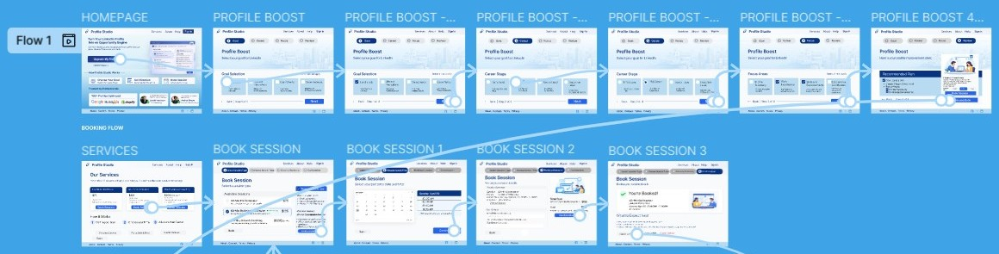

Designing a guided experience that helps professionals turn their LinkedIn profiles into real opportunities.
Profile Studio is a platform designed to help professionals improve their LinkedIn profiles through structured guidance and expert sessions.
Many professionals struggle to present themselves clearly on LinkedIn. Not because they lack experience, but because they don’t know how to structure it.
Create a clear, step-by-step experience that reduces confusion and leads users from intention to action.
Instead of overwhelming users with options, the experience breaks decisions into simple steps. This allows users to focus, move forward, and stay in control.

Users begin by defining their intent.

The process is broken into clear stages to reduce overwhelm.


Users move seamlessly from guidance to booking a session.


The final experience transforms a complex task into a clear and structured journey, helping users move forward with confidence.
Available for collaboration
Chimaconfidence086@gmail.com